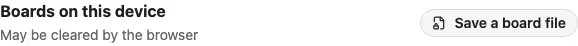
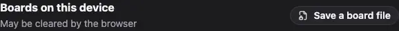

Keep your boards
The service stores nothing: the copy in your browser is sometimes the only one. Here is how to protect it.
1 In the profile, the "Boards on this device" row says whether the browser keeps them or may clear them.
The service stores nothing, so the copy in your browser can be the only one of a board. The profile shows whether the browser agreed to keep your boards on this device (protected) or may clear them when it needs space or after a long absence. Your private drafts are sealed with a key that belongs to this device and are deleted with their board.
When the browser may clear your boards and nobody else holds yours, RetroBoard proposes Save a board file once for that board. The file is encrypted and restores the board later, on this device or another: keep it somewhere safe.

